Guide
Établissements dans les abords de l’Université d’État de Ponta Grossa
Services et points utiles.
Appuyez sur un élément pour ouvrir la carte ci-dessous.
Consultez les informations sur le programme : site.sbpjor.org.br

Rencontre Internationale de Recherche sur le Journalisme
Les 3, 4 et 5 novembre, l’Université d’État de Ponta Grossa (UEPG) accueillera la troisième édition des Rencontres internationales de recherche en journalisme (REIJor), dont le thème est « Les irrévérences du journalisme ».
Consultez les informations, lieu de l’événement, les hôtels et comment s’y rendre :
uepg.br/ppgjor ou
Instagram
Établissements dans les abords de l’Université d’État de Ponta Grossa
Services et points utiles.
Appuyez sur un élément pour ouvrir la carte ci-dessous.
Consultez les informations sur le programme : site.sbpjor.org.br